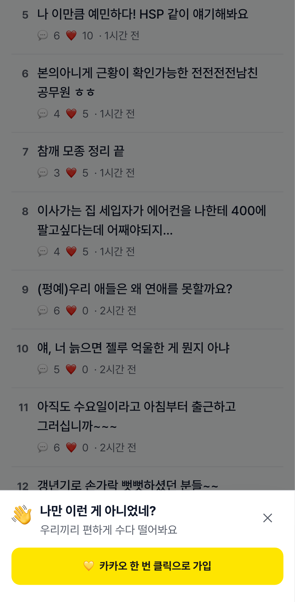
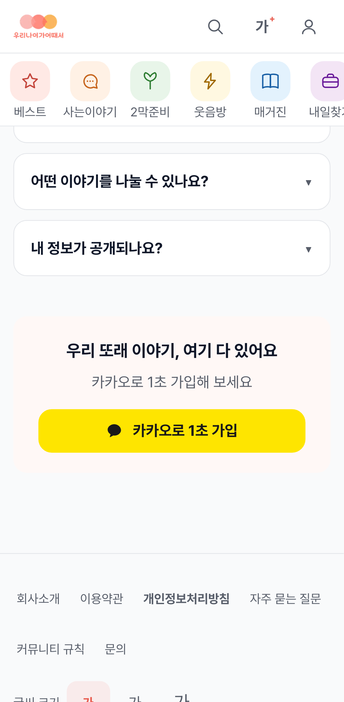
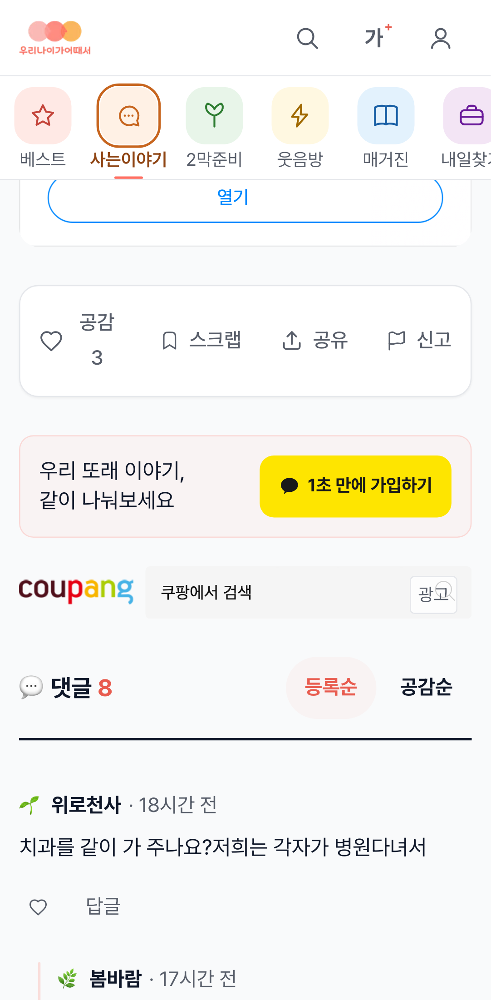
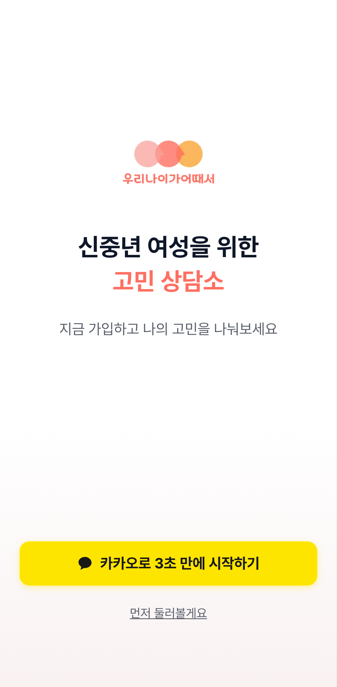
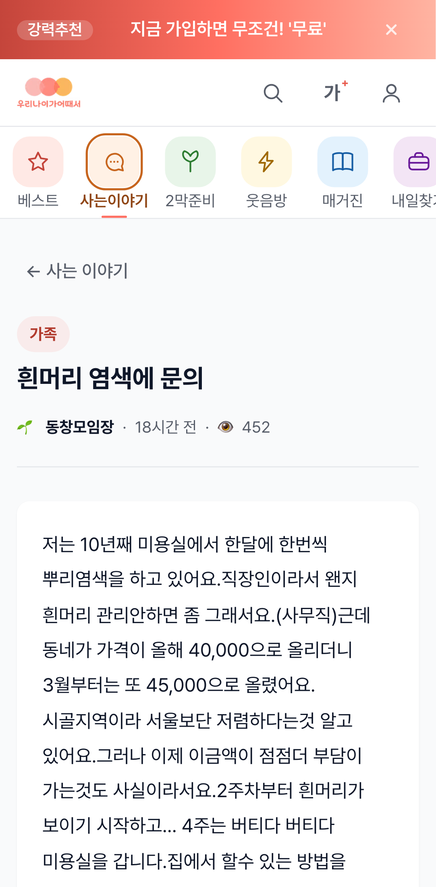

온보딩 가이드 · 신규 입사자 필독
우나어 채널 아키텍처 — 한 장으로 이해하기
우리 서비스는 웹 · PWA · TWA · 인앱브라우저로 들어오는 문이 여러 개입니다.
채널마다 무엇이 · 왜 · 어디서 뜨는지, 지금 켜진 것/꺼진 것, 끄고 켜는 법을 한 번에 정리했습니다.
코드를 몰라도 이해하게 썼고, 기술 내용은 접어뒀습니다(▸ 눌러 펼치기).
0
30초 요약 (TL;DR)
바쁘면 이것만 읽으세요.
- 들어오는 문 3개 + 인앱: ① 웹(안드 Chrome / 아이폰 Safari / 데스크탑) ② PWA(아이폰 홈화면 추가) ③ TWA(안드 Play스토어 앱) + 카톡·네이버 등 인앱브라우저
- 안드=웹 or TWA / 아이폰=웹 or PWA / 데스크탑=웹만
회원가입 유도 — 🟢 ON (항상)
TWA 진입 게이트 — 🟢 ON (끌 수 있음)
앱 설치 유도 — 🔴 OFF (현재 아무에게도 안 보임)
푸시 알림 — 🟢 ON (단, 토스트 OFF 스위치는 부채)
📖 읽는 법: 각 섹션은 ①한 줄 핵심 → ②자연어 설명 → ③표/그림 → ④[▸ 개발자용] 토글(코드·파일경로) 순입니다. 비개발자는 ①②③만, 개발자는 ④까지.
1
채널 개념 — 누가 어디로 들어오나
같은 웹사이트지만 "어떻게 실행됐는지"에 따라 채널이 갈립니다.
🌐
웹 (브라우저)
안드 Chrome · 아이폰 Safari · 데스크탑. 그냥 주소로 접속.
🍏
PWA
아이폰 "홈 화면에 추가"(standalone). 사실상 아이폰용.
🤖
TWA
안드 Play스토어 앱(com.agenotmatter.app). 안드 전용.
💬
인앱브라우저
카톡·네이버·인스타·구글앱 내부 브라우저. 설치·일부 기능 제약 → "외부 브라우저로 열기" 유도.
개발자용 — PWA/TWA 인프라 (manifest · assetlinks · sw)
- public/manifest.json: display=standalone, prefer_related_applications=true → 안드 Chrome은 PWA 대신 Play 앱을 권함. related_applications=play / com.agenotmatter.app
- public/.well-known/assetlinks.json: TWA 도메인 소유 검증(sha256 지문) — 이게 있어야 안드 앱이 주소창 없이 우리 도메인을 띄움
- public/sw.js: 오프라인 캐시 CACHE_NAME='unao-v3' + 웹푸시 수신(push) / 클릭(notificationclick) 핸들러
2
채널을 어떻게 알아내나 (감지)
화면 크기 + 브라우저 종류(UA) + 어디서 왔나(referrer) + 과거 기억(sticky)을 종합해 판별합니다.
중요: 같은 일을 하는 감지 함수가 3종 있고 역할이 다릅니다(혼동 주의).
| 함수 | 용도 | TWA 구분 | standalone 구분 |
|---|
| getBrowserEnv | 분석·이벤트 기록 | ✅ + sticky | ✕ |
| detectEnv | 설치 유도 환경 | ✕ (상위 isTWA 가드가 보호) | ✕ |
| useAppEnvironment | 게이트·CTA 분기 | ✅ (referrer+sticky) | ✅ |
🔑 TWA sticky(_twa_confirmed): "한 번 앱이면 계속 앱으로 기억". 카카오 로그인을 다녀오며 referrer가 사라져도 TWA로 유지됩니다. (측정 정확도 보강 — 최근 C1 수정으로 getBrowserEnv에도 적용)
채널값 전체(10종): desktop · kakao-android · kakao-ios · naver-inapp · instagram-inapp · google-inapp · crios · ios-safari · twa-android · android-chrome
개발자용 — 3함수 코드 위치
- src/lib/gtm.ts:167 getBrowserEnv() — UA 분기 + referrer(android-app://) + _twa_confirmed sticky
- src/components/common/AddToHomeScreen.tsx:31 detectEnv() — 설치유도용, twa-android 분기 없음(android-chrome으로 떨어지나 상위 isTWA 가드로 보호)
- src/hooks/useAppEnvironment.ts:12 useAppEnvironment() — isTWA(referrer+sticky) / isStandalone(display-mode)
3
핵심 매트릭스 — 채널별로 뭐가 다른가
어느 화면에서 무엇이 뜨는지 한눈에. (PWA=아이폰, TWA=안드 전용)
🔁 상호배타: 가입 배너(웹·PWA)와 TWA 게이트(TWA)는 동시에 안 뜹니다. TWA에선 배너가 꺼지고 게이트가 담당합니다.
4
기능별 정책 상세
4-1. 회원가입 유도 🟢 ON · 항상
- 가입 배너: 콘텐츠 페이지(/community·/magazine·/jobs·/best)의 비회원에게. 문구는 "나만 이런 게 아니었네?"(공감형 C 고정), 타이밍은 글 85% 읽은 후 또는 60초(정독 방해 안 함). 최대 4회·세션 1회. TWA는 게이트가 담당해 제외.
- 홈 가입카드(중반) · 글 하단 CTA(비회원→가입)
- 인앱브라우저: 카카오 로그인이 막히므로 "외부 브라우저로 열기"로 우회

가입 배너 — 글을 거의 다 읽으면 하단에 "나만 이런 게 아니었네?"(공감형 C)

홈 가입카드 — 홈 중반 "우리 또래 이야기, 여기 다 있어요"

글 하단 CTA — 비회원에게 "같이 나눠보세요 / 1초 만에 가입하기"
개발자용 — 가입유도 파일
- SignupPromptBanner.tsx — 문구 C 고정(:55), read_complete(85%/60초 백스톱), MAX_SHOWS=4, isTWA시 OFF
- SignupCard.tsx(홈) · PostCTA.tsx(글 하단)
4-2. TWA 진입 게이트 🟢 ON · 실험 중 · 끌 수 있음
- 안드 앱 첫 진입 비회원에게 가입 권유. 실험 A(없음) / B(글 3개 본 뒤 시트) / C(첫 화면 전체)
- 측정: 어느 방식이 가입 후 재방문(D1/D7)을 높이나
- OFF 스위치: NEXT_PUBLIC_TWA_GATE_ENABLED=false (미설정=ON)

C(hard) 게이트 — 안드 앱 첫 화면 전체를 가입으로. 작게 "먼저 둘러볼게요" 탈출구 포함
개발자용 — 게이트 파일
- TwaEntryGate.tsx:33 — NEXT_PUBLIC_TWA_GATE_ENABLED==='false' 가드
- src/lib/experiments/registry.ts — 실험 twa01_entry_gate (A34/B33/C33)
4-3. 앱 설치 유도 🔴 현재 OFF
- 마스터 스위치 NEXT_PUBLIC_PWA_INSTALL_ENABLED 미설정=OFF → 지금은 아무에게도 안 보임
- 켜지면: 안드→Play스토어 / 아이폰→홈 화면 추가 3단계 / 인앱→외부 유도
- 4단계 트리거: 첫 13초 / 가입 후 3페이지 / 첫 글·댓글 / 주간, 거절 3회면 정지
- TWA·PWA(이미 설치)에선 숨김
개발자용 — 설치유도 파일
- AddToHomeScreen.tsx — 트리거 first_15s(13초)/signup(3p)/engagement/weekly, MAX_DECLINES=3, 가드 NEXT_PUBLIC_PWA_INSTALL_ENABLED!=='true'
- app-links.ts(안드/아이폰 분기) · FooterPwaButton.tsx · PwaInlineBanner.tsx
- 상세: app-install-policy.html
4-4. 푸시 알림 🟢 ON
- 댓글 단 후 "알림 받을래요?"(comment 트리거)
- 일자리(job) 알림은 아직 미연결 = 부채 C6 (UI·문구는 완성, 부르는 곳이 없음)
- 채널별: 아이폰은 PWA 설치 시에만 웹푸시 가능(브라우저 정책)
개발자용 — 푸시 파일
- PushPermissionToast.tsx — setPushToastTrigger('comment')만 호출됨(CommentInput.tsx:37). 'job' 미연결
- public/sw.js:94 push / :125 notificationclick · push/service.ts(서버 발송)
4-5. 네비게이션 전 채널 공통
- 상단 아이콘 메뉴(Header) + 플로팅 FAB "✏️ 글쓰기". 하단 탭바 없음(시니어 친화 결정)

상단 아이콘 메뉴 — 베스트·사는이야기·2막준비·웃음방·매거진·내일찾기 + 검색·글자크기·프로필
개발자용 — 네비 파일
- src/components/layouts/FAB.tsx · layouts/MainLayout.tsx (하단 탭바 컴포넌트 없음)
5
측정·분석 — 채널을 어떻게 세나
- 모든 이벤트에 browser_env 기록(EventLog). TWA는 sticky로 정확도 보강 — referrer가 사라져도 twa-android 유지(C1 수정)
- 가입 채널(signupSource): TWA / WEB. browser_env 또는 referrer 이중 판정(한쪽만 살아도 TWA로 잡음)
- 어드민 채널별 가입전환 = first-touch attribution(최초 page_view referrer로 귀속). 카카오 OAuth 복귀가 전부 '직접입력'으로 쏠리던 왜곡을 교정
- TWA 게이트 실험: 어드민 /admin/ab-tests (게이트 재방문 D1/D7 + baseline)
- 봇/내부 제외: detectBot · x-bot-type · unao_internal(founder=isBot)
개발자용 — 측정 파일
- gtm.ts(browser_env) · api/events/route.ts:76(signupSource 이중판정) · admin.experiments-web.ts(게이트) · admin.insights.ts:122(first-touch)
6
현재 ON/OFF + 스위치 (운영 핵심)
| 기능 | 현재 | 스위치(env) | 끄고 켜는 법 |
|---|
| 회원가입 유도 | 🟢 ON | (없음·항상) | 코드 변경만 |
| TWA 게이트 | 🟢 ON | NEXT_PUBLIC_TWA_GATE_ENABLED | Vercel서 =false → OFF |
| 앱 설치 유도 | 🔴 OFF | NEXT_PUBLIC_PWA_INSTALL_ENABLED | Vercel서 =true → ON |
| 푸시 토스트 | 🟢 ON | FEATURE_PUSH_TOAST ⚠️ 현재 무효 | 코드 변경 필요 (아래 주의) |
| 웹푸시 발송 | 🟢 ON | FEATURE_WEB_PUSH (서버) | Vercel서 =false → OFF |
⚠️ 푸시 토스트는 지금 끌 수 없습니다(부채). FEATURE_PUSH_TOAST는 NEXT_PUBLIC_ 접두사가 없는데, 이 값을 쓰는 PushPermissionToast는 클라이언트 컴포넌트라 항상 ON으로 읽힙니다(=죽은 스위치). 끄려면 코드를 고쳐야 합니다. ↔ 웹푸시 발송(FEATURE_WEB_PUSH)은 서버에서 동작하므로 정상 OFF 가능. (자세히는 7번)
7
알려진 부채·주의점
- C6(Low): 일자리 알림 푸시('job')가 영영 안 뜸 — 부르는 곳 미연결
- 푸시 토스트 OFF 스위치 부재(C2와 동형): FEATURE_PUSH_TOAST가 클라이언트에서 무효 → 긴급 OFF 불가. NEXT_PUBLIC_ 방식으로 고쳐야 함
8
개발자용 — 파일 지도 (전체)
영역별 파일:line
| 영역 | 파일 |
|---|
| 감지 | gtm.ts:167 · AddToHomeScreen.tsx:31 · useAppEnvironment.ts:12 |
| 가입유도 | SignupPromptBanner.tsx · SignupCard.tsx · PostCTA.tsx |
| 게이트 | TwaEntryGate.tsx · experiments/registry.ts |
| 설치유도 | AddToHomeScreen.tsx · app-links.ts · FooterPwaButton.tsx · PwaInlineBanner.tsx |
| 푸시 | PushPermissionToast.tsx · sw.js · push/service.ts · feature-flags.ts |
| 측정 | gtm.ts · api/events/route.ts · admin.experiments-web.ts · admin.insights.ts |
| 인프라 | public/manifest.json · public/sw.js · public/.well-known/assetlinks.json |